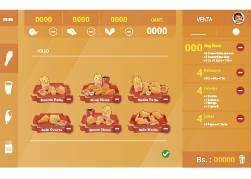

<section class="oe_container">
    <div class="oe_row oe_spaced">
        <div class="oe_span12">
            <h2 class="oe_slogan">Un Punto de Venta muy amigable</h2>
            <h3 class="oe_slogan">Configura en un minuto, y vende en segundos</h3>
        </div>
        <div class="oe_span6">
            <div class="oe_demo oe_picture oe_screenshot">
                    
            </div>
        </div>
        <div class="oe_span6">
            <p class='oe_mt32'>
                Punto de Venta Sawers presenta una interfaz tactil de venta muy limpia y productiva
                que se ejecuta en linea y fuera de linea, maneja hardware moderno.
            </p>
            <p>
                Esta completamente integrado con el inventario de la empresa y la contabilidad, muestra estadisticas 
                en tiempo real y consolidaciones entre todas las tiendas sin la molestia de la integracion de varias 
                aplicaciones.
            </p>
        </div>
    </div>
</section>


